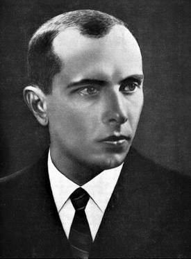

РУСКИЙ ВОЄНИЙ КОРАБЛЬ ІДІ НА*УЙ
БАТЬКО НАШ БАНДЕРА, УКРАЇНА МАТИ!
Бандера Степан Андрійович

Степа́н Андрі́йович Банде́ра (1 січня 1909, с. Старий Угринів, Калуський повіт, Королівство Галичини та Володимирії, Австро-Угорщина, нині Калуського району, Івано-Франківська область, Україна — 15 жовтня 1959, Мюнхен, Баварія, Федеративна Республіка Німеччини) — український політичний діяч, революціонер, один із радикальних та чільних ідеологів, практиків і теоретиків українського націоналістичного руху XX століття[1], після розколу Організації українських націоналістів — голова Проводу ОУН-Б[2]. Разом з Миколою Лебедем був одним зі організаторів вбивства Броніслава Перацького за політику пацифікації та вбивства Олексія Майлова через проведення спланованого та штучного організованого голоду на українських землях 1932—1933.
Як активний діяч УВО та ОУН має законодавчо визначений статус Борець за незалежність України у XX сторіччі[3]. В 2010 посмертно нагороджений званням герой України. Вважається національним героєм України. У 2008 році був визнаний третім зі ста великих українців після Ярослава Мудрого та Миколи Амосова за підсумками голосів в опитуванні громадської думи "Великі Українці".
Степан Бандера та Ярослав Стецько були авторами Акта відновлення Української Держави 30 червня 1941 року. 5 липня 1941 року Бандеру помістили під домашній арешт, а з 15 вересня 1941 року — у центральну Берлінську в'язницю. З початку 1942 року по серпень 1944 року перебував у концтаборі Заксенгаузен у бункері «Целленбау» у відносно комфортних умовах[4]. У вересні 1944 року його звільнили й запропонували участь у керівництві антирадянського збройного руху в тилу Червоної армії[5][6], однак Бандера відхилив пропозицію та на співпрацю не погодився[7][8]. С. Бандера і Ярослав Стецько у квітні 1944 року на нараді обговорювали завдання підривної діяльності проти СРСР з керівником таємних операцій вермахту Отто Скорцені.[9][10] Представники ОУН(б) та УПА, яку створила ОУН(б), в цей час проводили переговори, почали і продовжували співпрацювати з німцями,[11] [12] [13] [14] [15] [16] [17] хоча інші підрозділи УПА ще воювали з нацистами в 1944 році.[18]
Разом з Андрієм Мельником, Адрієм Лівицьким та Павлом Скоропадським став співзасновником Українського національного комітету.
Радянський уряд уповноважив КДБ вчинити вбивство Степана Бандери в Мюнхені, ФРН. Це здійснив радянський агент Богдан Сташинський 15 жовтня 1959 року[19].
Оцінки Степана Бандери вкрай суперечні. Після розпаду СРСР для багатьох українців його ім'я стало символом боротьби за незалежність України. Натомість багато мешканців Польщі та Росії ставляться до нього вкрай негативно, звинувачуючи у фашизмі, тероризмі, радикальному націоналізмі, що зокрема виявлялось у фізичній ліквідації лідерів відмінних від ОУН(б) українських націоналістичних течій, і колабораціонізмі[20][21]. Визначення «бандерівці», похідне від його прізвища, поступово стало загальним і застосовним для радянської та російської пропаганди до всіх українських націоналістів, незалежно від їхнього ставлення до Бандери[22][23][24].
Родина
Народився 1 січня 1909 року в селі Старий Угринів, нині Калуського району Івано-Франківської області, Україна (тоді Калуський повіт, Королівство Галичини та Володимирії, Австро-Угорщина).Батько: о. Андрій Бандера, (11.12.1882—10.07.1941) греко-католицький священник, був у той час парохом у селі Старому Угринові. Походив із міста Стрия.
Мати: Мирослава Бандера, (1890—1921) походила з давньої священницької родини Глодзінських (була донькою греко-католицького священника із села Старого Угринова).
Дідусь: Володимир Ґлодзінський, (1836—1931) священник Української Греко-католицької церкви, дід Степана по материнській лінії.
Брати: Олександр (25.03.1911—кінець липня 1942), Василь (12.02.1915—21.07.1942), Богдан (04.04.1919—?).
Сестри: Марта-Марія (22.06.1907—13.11.1982), Володимира (10.03.1913—11.07.2001), Оксана (22.12.1917—24.12.2008).
Дружина: Ярослава Бандера, (14.09.1917 — 17.08.1977) походила з родини Опарівських, українська політична діячка.
Діти: Наталя (26.05.1941—13.01.1985), Андрій (16.05.1946 — 19.07.1984)[25], Леся (27.08.1947—16.08.2011)[26][27].
Внучки: Богдана, Олена[28].
Онук: Степан Андрійович Бандера (1969), народився у Вінніпезі (Канада), має диплом Колумбійського університету. Нині працює журналістом, як і його батько, який видавав у Канаді англомовну газету Ukrainian Echo[29].
Збереглася докладна автобіографія Степана Бандери[30].
Дитячі роки (1909—1927)
Будинок в Старому Угринові, де Бандера народився і провів перші 10 років життяСтепан Бандера в Пласті (1923)
Церква в Старому Угринові, в якій хрестили Степана Степан Андрійович Бандера народився 1 січня 1909 року в галицькому селі Старий Угринів, на території королівства Галичини і Лодомерії, що входило у склад Австро-Угорської монархії. Його батько, о. Андрій Михайлович Бандера, був греко-католицьким священником і походив з родини стрийських міщан-хліборобів Михайла й Розалії Бандер. Дружина Андрія Михайловича, Мирослава Володимирівна (1890—1922), у дівоцтві Ґлодзінська, була дочкою греко-католицького священника зі Старого Угринова о. Володимира Ґлодзінського і його дружини Катерини. Степан був другою дитиною в сім'ї після старшої сестри Марти-Марії (1907—1982). Надалі в сім'ї народилося ще шестеро дітей: Олександр (1911—1942), Володимир (1913—2001), Василь (1915—1942), Оксана (1917—2008), Богдан (1921—1944?) і Мирослава (народилася й померла в 1922)[31][32].
Фронти Першої світової війни 4 рази в 1914–1915 і 1917 пересувалися через його рідне село. Улітку 1917 року жителі Галичини стали свідками проявів національно-революційних зрушень і революції в армії царської Росії. У власній автобіографії Степан Бандера згадує також про «велику різницю між українськими та московськими військовими частинами».
З дитинства С. Бандера був свідком відродження й розбудови Української держави. З листопада 1918 його батько був послом до парламенту Західноукраїнської Народної Республіки — Української Національної Ради — в Станиславові й брав активну участь у формуванні державного життя Калущини.
У травні 1919 року під час наступу польських військ Степан (разом з усією родиною військового капелана УГА Андрія Бандери) був евакуйований до подільського містечка Ягільниці, де родина перебувала до вересня (батько в липні відступив разом з Галицькою Армією за Збруч)[33]. Дорогою до Ягільниці кілька днів родина о. Андрія проживала в домі родини Гафтковичів у м. Бучачі[34].
У вересні або жовтні 1919 року Степан Бандера вступив до української гімназії у Стрию, де вчився до 1927 року. У третьому класі (від 1922 р.) він став учасником Пласту; у Стрию був у 5-му пластовому курені імені князя Ярослава Осмомисла, а по закінченню гімназії — у 2-му курені старших пластунів «Загін Червона Калина».
Навесні 1922 р. від туберкульозу горла померла його мати.
Юність (1927—1934)
Степан Бандера — пластун куреня «Червона калина». Фото 1929 або 1930 року У середині 1927 року Бандера успішно склав випускні іспити (матуру) в гімназії й вирішив вступити до Української господарської академії в Подєбрадах (Чехословаччина), проте польська влада відмовила в наданні молодій людині закордонного паспорта, тому він був змушений на рік залишитися в Старому Угринові. У 1927–1928 роках Степан Бандера переймався культурно-освітньою та господарською діяльністю в рідному селі (працював у читальні «Просвіти», провадив театрально-аматорський гурток і хор, заснував руханкове товариство «Луг» і належав до засновників кооперативів). При цьому керував організаційно-вишкільною роботою по лінії підпільної УВО в довколишніх селах.У вересні 1928 року він переїхав до Львова й там записався на агрономічний відділ Високої Політехнічної Школи, де вчився до 1933 року. Перед дипломним іспитом через політичну діяльність його арештували й ув'язнили.
У студентські роки брав активну участь в організованому українському національному житті. Був членом українського товариства студентів політехніки «Основа» та членом управи Кружка студентів-рільників. Деякий час працював у бюро товариства Сільський Господар, що займався розвитком агрокультури на західних українських землях. З товариством «Просвіта» їздив у неділі та свята у поїздки в довколишні села Львівщини з доповідями та на допомогу в організації інших подій. У ділянці молодіжних і спортивно-руханкових організацій був активним передусім у Пласті, як член 2-го куреня старших пластунів «Загін Червона Калина», в Українському Студентському Спортовому Клубі (УССК), а деякий час теж у товариствах «Сокіл-Батько» й «Луг» у Львові. Займався бігом, плаванням, лещетарством, мандрівництвом. У вільний час залюбки грав у шахи, крім того, співав у хорі та грав на гітарі й мандоліні. Не палив і не вживав алкогольних напоїв.
21 жовтня 1928: Генеральна рада «Загону Червона калина» в Академічному домі у Львові. Зліва праворуч сидять: Степан Охримович, Володимир Калинович, Володимир Ерденбергер, Євген Пеленський, Богдан Чехут, Осип Грицак, Роман Ерденбергер, Михайло Поточняк. Стоять: Осип Тюшка, нн, Остап Каратницький, Степан Бандера, Юліан Гошовський, Ярослав Рак, Ярослав Падох, Роман Щуровський У 1932–1933 рр. виконував функцію заступника крайового провідника, а в середині 1933 р. був призначений крайовим провідником ОУН і крайовим комендантом УВО на ЗУЗ. У липні 1932 р. Бандера з кількома іншими делегатами від КЕ ОУН на ЗУЗ брав участь у Конференції ОУН у Празі (так звана Віденська Конференція, яка була найважливішим збором ОУН після установчого конгресу). У 1933 р. брав участь у конференціях у Берліні й Гданську.
Під керівництвом Бандери, ОУН відходить від експропріаційних акцій і починає серію каральних акцій проти представників польської окупаційної влади. У цей період оунівці здійснили три політичні вбивства, що отримали значний розголос: убивство шкільного куратора Гадомського, звинувачуваного в нищенні поляками українського шкільництва та полонізації; убивство Олексія Майлова, секретаря консульства СРСР у Львові, який був одночасно агентом ГПУ при НКВС — як протест проти Голодомору в Україні; та вбивство Броніслава Перацького, міністра внутрішніх справ Польщі, за керівництва якого польська влада провела криваві акції «пацифікації» (умиротворення) українців. Степан Бандера здійснював загальне керівництво замахами на Майлова[35] та Перацького[36].
В ув'язненні. Вихід із в'язниці (1936—1939) 14 червня 1934 року, за день до вбивства Броніслава Перацького, Бандеру заарештувала, а потім ув'язнила польська поліція і він перебував під слідством у в'язницях Львова, Кракова й Варшави до кінця 1935 року. З 18 листопада 1935 до 13 січня 1936 відбувався Варшавський процес, на якому Бандера, разом з 11-ма іншими обвинуваченими, був суджений за належність до ОУН і за організацію вбивства міністра внутрішніх справ Польщі Броніслава Перацького. Бандеру засудили до смертної кари, яку замінено на довічне ув'язнення. Після того він сидів у в'язницях «Święty Krzyż» («Святий Хрест») поблизу Кельць, у Вронках поблизу Познані та в Бересті до вересня 1939 року. 13 вересня, коли становище польських військ на тому відтинку стало критичним, в'язнична адміністрація та сторожа поспішно евакуювалися, в'язні вийшли на волю.
У першій половині січня 1940 року Бандера прибув в Італію. Був у Римі, де станицею ОУН керував професор Євген Онацький. Там він зустрівся зі своїм братом Олександром, який мешкав у Римі від 1933–1934, студіював і захистив докторат з політично-економічних наук, одружився й працював у місцевій станиці.
Друга світова війна та післявоєнні роки
Після вбивства радянським агентом Судоплатовим Євгена Коновальця Провід ОУН очолив полковник Андрій Мельник, соратник Коновальця з часів боротьби УНР та спільної праці в лавах УВО. У серпні 1939 року в Римі відбувся другий Великий Збір Українських Націоналістів, який офіційно затвердив Андрія Мельника на посаді голови ПУН. Проте група молодих націоналістів на чолі зі Степаном Бандерою, яка після окупації Польщі Німеччиною повернулася з тюрем і була відірвана від діяльності Організації, почала домагатися від ПУН та його голови полковника Андрія Мельника зміни вичікувальної тактики ОУН, а також усунення з ПУН кількох його членів. Конфлікт набрав гострих форм і призвів до розколу. У лютому 1940 року утворився «Революційний Провід ОУН» на чолі з Бандерою.Через рік Революційний Провід ОУН скликав II Великий Збір ОУН, на якому одностайно обрано головою Проводу Степана Бандеру. Під його проводом ОУН-Б стає кипучою революційною організацією. Вона розбудовує організаційну мережу на Рідних Землях, творить похідні групи ОУН-Б з того членства, що було за кордоном, і в порозумінні з прихильними українській справі німецькими військовими колами творить український легіон та організує визвольну боротьбу, спільно з іншими поневоленими Москвою народами. Ця частина ОУН відома під назвою ОУН революційна (ОУНР) (згодом — ОУНСД «ОУН самості́йників-державників», поширена назва бандерівці).
Перед вибухом німецько-радянської війни Бандера ініціює створення в Кракові Українського Національного Комітету для об'єднання українських політичних сил до боротьби за державність.
Рішенням Проводу Організації 30 червня 1941 р. проголошено відновлення Української Держави у Львові. Ця подія стала спробою «поставити перед фактом» керівництво Третього Рейху та змусити визнати українську боротьбу. Проте Гітлер доручив своїй поліції негайно зліквідувати цю «змову українських самостійників». Як вислід — гітлерівці заарештували Бандеру після акту проголошення віднови Української Держави — 5 липня 1941. Якийсь час Провідник перебував у берлінській поліційній тюрмі на Принцреґентен-штрассе (також Володимир Стахів). У січні 1942 року разом з кількома соратниками з ОУНР потрапив до «Целленбау» — відокремленого барака («бункера») в концтаборі «Заксенгавзен», відомого місця утримування найбільш важливих в'язнів Рейху та кращими умовами ув'язнення порівняно з умовами концтабору[37][38][39].
Степан Бандера і кілька інших провідних членів ОУН у вересні[40] (чи грудні) 1944 р. звільнені нацистами з ув'язнення. Гітлерівці спробували приєднати до своїх сил ОУН-Б і УПА як союзників проти Москви. На чолі цього руху вони планували поставити генерала А. Власова. Після таємної наради (брали участь Бандера, Мельник, А. Лівицький, П. Скоропадський) таку гітлерівську пропозицію Степан Бандера відкинув. Також гітлерівцям поставили умову: зректись усіх претензій на українські землі, визнати повноважним органом влади України спеціальний комітет, який мав діяти окремо від «комітету народів Росії» А. Власова[41].
Одним зі співв'язнів провідника в бункері «Целленбау» був, зокрема, польський генерал Стефан Ровецький — головний командант Армії Крайової, з яким вони мали таємну розмову. Пізніше генерал писав своїм соратникам: «… уже зараз мусимо рахуватися з утратою наших східних земель на користь українців»[40].
У 1943 році постала кризова ситуація в рядах ОУНР на Українських землях, до того, як у травні ЇЇ очолив Роман Шухевич, адже не було ще чіткого плану, форм та методів революційної боротьби організації за тодішніх воєнних обставин. Тому на місцях члени ОУН, відчували вимогу часу, почали розгортати боротьбу проти гітлерівців. Степан Бандера у власній статті «Командир-провідник: (Слідами сл. пам. Романа Шухевича)» написав: Зокрема на Волині крайова ОУН почала самочинно переходити на повстанські форми боротьби з участю широких народніх мас, враховуючи необхідність боронити населення від вивозу до Німеччини на невільничу працю, від гітлерівського терору й грабунку.[42] На Крайовій ширшій нараді Проводу ОУН-Б на Українських Землях у лютому 1945 р., що була тлумачена, як частина Великого Збору ОУН-Б, обрано нове Бюро Проводу в такому складі: Бандера, Шухевич, Стецько. Цей вибір підтвердила Конференція ЗЧ ОУН-Б 1947 р. і тоді Степан Бандера став знову Головою Проводу всієї ОУН-Б. Як Провідник ОУН-Б, Бандера у післявоєнний час вирішує далі продовжувати збройну боротьбу проти Москви. Він завзято організує крайовий зв'язок і бойові групи ОУН-Б, які втримують зносини з Краєм постійно аж до його смерті.
1948 року, в Закордонних Частинах ОУН-Б утворюється опозиція, якій Степан Бандера протиставився в площині ідейній, організаційній і політичній. Він категорично виступає проти ідей демократизації ОУН та відмови від авторитарних, тоталітарних методів її діяльності. Посилаючись на твердження опозиції, що ідеологія і програма ОУН не витримали проби життя в зустрічі з настроями цілого українського народу, Бандера заперечив її погляди як невірні і на тому тлі розвинув теорію подвійної політичної програмовості ОУН — одна програма, за його твердженням, мала-б бути призначена для членства і прихильників націоналізму, а друга для сторонніх чинників. Перша повинна бути основною вірою Руху і підґрунтям для виховання кадрів та загалом мала б залишитися незмінною незалежно від зовнішніх обставин. Бандера вважав, що таку програму ОУН вже створила, має її і вона не потребує ніяких змін та доповнень. Друга програма повинна існувати для зовнішнього вжитку. Вона може мінятися залежно від обставин і міжнародного положення. Вона повинна узагальнювати передусім способи тактики і їх широко пропагувально використовувати[43].
У грудні 1950 р. Бандера пішов з посту Голови Проводу ЗЧ ОУН-Б. 22 серпня 1952 р. він залишив також пост Голови Проводу всієї ОУН-Б. Але це його рішення не було, одначе, прийняте ніякою компетентною установою ОУН-Б і Бандера залишився надалі Провідником ОУН-Б до своєї смерті 1959 року.
1955 р. відбулася 5-та Конференція ЗЧ ОУН-Б, яка наново вибрала Головою Проводу ЗЧ ОУН-Б Степана Бандеру, і з того часу робота організації знову проводилася активно.
Останні роки
Напруженими для родини були повоєнні роки, адже радянські спецслужби полювали не лише за провідником національного руху, а й за його дітьми. Наприклад, до 1948 року сім'я шість разів змінюватиме місця проживання: Берлін, Інсбрук, Зеєфельд, Мюнхен, Гільдесгайм, Штарнберг. Зрештою, через необхідність дати доньці хорошу освіту, родина у 1954 році остаточно переїжджає до німецького міста Мюнхен (Баварія). Батьки намагались приховати від Наталки важливість особи її батька, щоби не наражати дівчинку на небезпеку. Спогади Наталки, доньки Степана Бандери, про той час[44]:« Маючи тринадцять років, я почала читати українські газети і читала багато про Степана Бандеру. З бігом часу, на підставі різних спостережень, постійної зміни прізвища, як і через факт, що навколо мого батька завжди було багато людей, в мене виникли певні здогади. Коли раз один знайомий проговорився, то я вже була певна, що Бандера — це мій батько. « Саме в Мюнхені Степан Бандера провів останні роки життя, проживаючи під паспортом на ім'я Штефан Попель. За однією з версій, паспорт залишився йому від львівського шахіста Степана Попеля, який у 1944 р. покинув Україну, на початку 1950-х років жив у Парижі, а 1956 року переїхав до США[45].
Убивство
Докладніше: Убивство Степана БандериОголошення в газеті «Свобода» про загибель Степана Бандери 15 жовтня 1959 року в під'їзді будинку на вулиці Крайтмайр, 7 (нім. Kreittmayrstraße), в Мюнхені о 13:05 знайшли ще живого, залитого кров'ю Степана Бандеру. Медична експертиза виявила, що причиною смерті була отрута. Богдан Сташинський зі спеціального пістолета вистрілив в обличчя Степану Бандері струменем розчину ціаніду калію.
Будинок на вулиці Крайтмайр, 7, в якому мешкав та був вбитий Степан Бандера Радянська офіційна пропаганда поспішила звинуватити в скоєнні цього злочину міністра у справах біженців ФРН Теодора Оберлендера, з яким Степан Бандера мав тісні зв'язки під час Другої світової війни. Нібито за наказом цього політика «ліквідували» керівника ОУН. У Бонні до цієї версії поставилися скептично.
Також серед українських емігрантів почали стрімко поширюватися чутки про те, що Степан Бандера став жертвою західнонімецьких спецслужб. Цю версію поліція відразу ж відкинула. Керівник ОУН активно співпрацював з британською розвідкою. Малоймовірно, що Бонн вирішив спровокувати конфлікт з Лондоном.
Два роки пізніше, 17 листопада 1961 року, німецькі судові органи проголосили, що вбивцею Степана Бандери є Богдан Сташинський з наказу Шелєпіна та Хрущова.
Після докладного слідства проти вбивці відбувся так званий «процес Сташинського» з 8 по 15 жовтня 1962 року. Ухвалу проголошено лише 19 жовтня — вбивцю засуджено на 8 років в'язниці.
Німецький Верховний Суд у Карлсруе затвердив, що головним обвинуваченим у вбивстві Бандери є радянський уряд у Москві. В інтерв'ю російській газеті «Комсомольская правда», оприлюдненому у номері за 6 грудня 2005 року, колишній голова КДБ СРСР Володимир Крючков визнав, що «вбивство Степана Бандери було одним з останніх усунень КДБ насильницькими методами небажаних елементів»[46].
Могила С.Бандери, сектор 43 коорд. могили 48.111224 11.498448 20 жовтня 1959 року Степана Бандеру поховали на мюнхенському цвинтарі Вальдфрідгоф[47] на 43 полі, координати могили 48.11122° пн. ш. 11.49844° сх. д.
Акти вандалізму
15 жовтня 2018 року в німецькому Мюнхені прокремлівський пропагандист Грем Філліпс зірвав прапори з могили лідера ОУН Степана Бандери і прикріпив до могильного хреста банер з написом «Тут похований український нацист Степан Бандера». Відповідне відео він опублікував у YouTube. Поліція Мюнхена зафіксувала факт неналежної поведінки прокремлівського пропагандиста Грема Філліпса на могилі провідника ОУН Степана Бандери.Грем Філліпс — британець, журналістські матеріали якого набули розголосу під час Євромайдану і війни на сході України. Зокрема, він відомий пропагандистськими сюжетами російських телеканалів Russia Today та «Звезда», в яких систематично висловлює підтримку бойовикам на Донбасі. У 2014 році українська влада його затримала, але за наполяганням британського посольства його відпустила[48].
З приводу події навколо могили Степана Бандери в Українському інституті національної пам'яті зазначено:[49]
« «Цей випадок не лише закликає нас до реакції на рівні Міністерства закордонних справ України, але водночас знову порушує надзвичайно важливе питання — створення Українського національного пантеону. Посилення заходів безпеки, яких можна б було вжити на кладовищі Вальдфрідгоф щодо охорони могили Степана Бандери, — це лише часткове вирішення проблеми чи навіть більше – відтермінування нового акту вандалізму, які щоразу заохочуються Москвою і її прихильниками», — прокоментував співробітник Українського інституту національної пам'яті Павло Подобєд. « 24 липня 2022 року здійснено ще один акт вандалізму — невідомі вандали розмалювали могилу лідера українського націоналістичного руху Степана Бандери. Зловмисники фарбою нанесли на кам'яний хрест зображення серпів і молотів[50]
Трагічна доля рідних Степана Бандери
Храм у Кракові, де Бандера брав шлюбЦерква Святого Норберта у Кракові, де Бандера брав шлюб З початком окупації України нацистськими військами один із загонів опору очолив молодший брат Степана — Богдан. Він загинув 1942 чи 1943 року.
5 липня 1941 року у Кракові Степан Бандера був заарештований. За ним до Берліна поїхала дружина Ярослава з тримісячною донькою Наталкою, щоб перебувати близько до чоловіка. Бандеру утримували спочатку у в'язниці, потім — у концтаборі Заксенгаузен (мав кращі умови, ніж інші в'язні), де він перебував до 1944 року. Братів Олександра (доктора політекономії) та Василя (випускника факультету філософії Львівського університету) у 1942 році вбили польські наглядачі-капо у концтаборі Аушвіц[51][52].
О. Андрія Бандеру — батька Степана, вбито радянською владою. Сестер Оксану та Марту-Марію у 1941 р. заарештовано і заслано до Сибіру (Красноярський край). Керівництво СРСР десятиліттями не дозволяло їм повернутися до України — Марта-Марія Бандера померла на чужині у 1982 році, а літня Оксана Бандера повернулася на Батьківщину лише у 1989 році після майже 50 років життя у Сибіру. Вона померла 24 грудня 2008 року.
Ще одна сестра — Володимира — перебувала у радянських виправно-трудових таборах від 1946 по 1956 рік.
Погляди Степана Бандери
У цьому розділі бракує інформації про погляди на щось за межами релігії. Будь ласка, розширте цей розділ, додавши цю інформацію. Подробиці можуть бути на сторінці обговорення. (січень 2022) На релігію « Справа релігії, її оборони перед наступом безбожницького комунізму, справжнє ісповідування і підтримування живої християнської віри – це найважливіша справа не тільки самої Церкви, але й всього народу, всіх національних сил, зокрема національно-визвольного руху. « — Степан Бандера,
Ушанування пам'яті
Могила Степана Бандери, Вальдфрідгоф, Мюнхен Назви організацій, фільми, книги, поштові марки, смолоскипна хода, роки, премії Прізвище «Бандера» стало одним із символів українського національно-визвольного руху XX сторіччя. Після проголошення незалежності багато молодіжних, політичних та громадських організацій названо на його честь. Одною з неформальних назв Львова є «Бандерштадт», тобто «місто Бандери». На Волині проводять музичний фестиваль «Бандерштат».Поштова марка до 100-річчя від дня народження У 1995 році режисер Олесь Янчук зняв фільм «Атентат — Осіннє вбивство в Мюнхені» про повоєнну долю Степана Бандери та загонів УПА. Пізніше, у 2000 році він зняв фільм «Нескорений». В обох фільмах роль Степана Бандери виконує Ярослав Мука.
Нідерландський письменник Рогір ван Аарде написав роман «Замах», присвячений політичному вбивству Степана Бандери.
У проєкті «Великі українці» провідник українського визвольного руху посів 3-є місце (261 247 голосів (16,12 %) від загальної кількості людей, які взяли участь у голосуванні[54]). Проєкт закінчився гучним скандалом: Бандера, якого представляв Вахтанг Кіпіані, був серед лідерів голосування, але став третім, тоді як на підтримку майбутнього переможця Ярослава Мудрого, якого представляв Дмитро Табачник, за деякими даними, в останній день голосування з 80 номерів приходило понад 100 смс щохвилини.[55] Шеф-редактор проєкту Вахтанг Кіпіані заявив, що підсумки голосування сфальсифіковано[56], утім продюсер проєкту Єгор Бенкендорф заперечив це[57]. Ведуча проєкту Ганна Гомонай висловила переконання, що слід провести службове розслідування в цій справі[58]:
« …станом на 14 травня, коли в ефір вийшов документальний фільм про Ярослава Мудрого, він справді був на 4 місці. Тому, очевидно, що переважну кількість голосів, яка не тільки дозволила князю перемогти, але і зробити це з колосальним відривом від інших претендентів – Ярослав Мудрий отримав за останні 2 дні перед ефіром. « 1 січня 2009 року з нагоди 100-річчя з дня народження Степана Бандери Українське державне підприємство поштового зв'язку «Укрпошта» видало пам'ятний конверт[59], а також поштову марку[60], автором яких є Василь Василенко. На лицьовій стороні конверта поміщено зображення Степана Бандери, під яким розміщено логотип Організації Українських Націоналістів (увінчаний державним прапором України). Нижче зображення є напис «100 років від дня народження» та факсиміле особистого підпису провідника ОУН[61].
2009 та 2014 роки на Тернопільщині проголошені Роками Степана Бандери.
Починаючи з 2007 року тисячі прибічників партії «Свобода» щороку відзначають річницю з дня народження Степана Бандери, влаштовуючи 1 січня в центрі Києва смолоскипну ходу[62].
Львівська обласна рада у 2012 році стала ініціатором заснування премії імені Героя України Степана Бандери[63].
У 2014 для студентів Національного університету «Львівська політехніка» народний депутат України Ірина Фаріон заснувала студентську премію імені Героя України Степана Бандери[64].
Також на честь Степана Бандери названо 23 курінь УПЮ імені Степана Бандери.
Пам'ятники
Докладніше: Пам'ятники Степанові БандеріПам'ятники Степану Бандері є у Львові, Тернополі, Івано-Франківську, Дрогобичі, Коломиї, Здолбунові, Калуші, Городенці, Теребовлі, Трускавці, Бережанах, Бучачі, Дублянах, Микитинцях, Самборі, Снятині, Стрию, Бориславі, Заліщиках, Червонограді, Мостиськах, селах Козівка, Вербів[65], Грабівка та Середній Березів. У місті Турка у 2009 році закладено постамент для пам'ятника Степану Бандері.